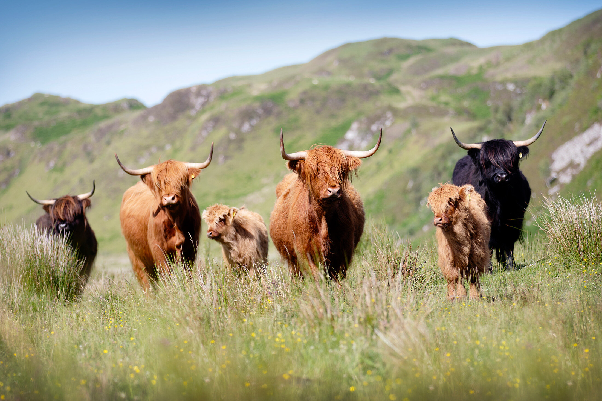
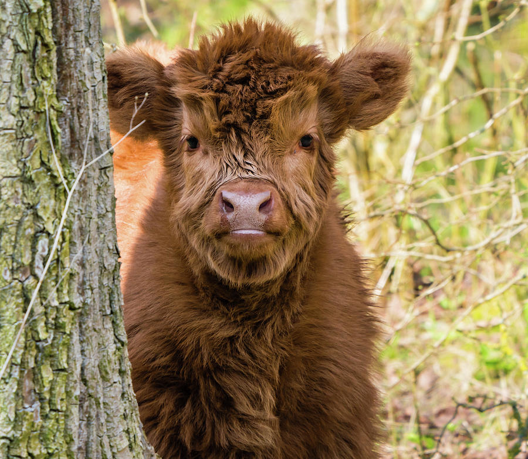

Highland coos are the oldest registered cattle breed in the world. The first thing you notice about Highland cows is their unique long hair, and they have distinctive horns. They can be a range of colours, including red, ginger, black, dun, yellow, white, grey, tan, silver and brindle.

Highland Coos are one of the friendliest cattle breeds, they’re
hardly ever mooooo-dy.
Although friendly, they still have massive horns on their heads,
so even if you really want a coo-ddle, we wouldn’t recommend it.
Highland Cows show affection to each other by mounting, play
fighting and licking each other.